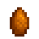
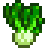
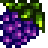

Calidad y reservas
Otoño concentra varios requisitos útiles; separar ejemplares antes de vender o procesar evita tener que esperar otro ciclo.
Cosecha
El Valle toma tonos dorados y rojizos mientras el año empieza a cerrarse
Es una buena estación para mirar lo que falta en tus colecciones y decidir qué querés guardar antes del invierno.
Otoño concentra varios requisitos útiles; separar ejemplares antes de vender o procesar evita tener que esperar otro ciclo.
Manzanas y granadas pueden requerir planificación de varios meses; los árboles frutales no son una compra que se resuelve de un día para otro.
Antes de terminar el año, revisá la Feria, la Víspera de los Espíritus y las tareas pendientes de pesca, forrajeo y Centro Cívico.
Una selección práctica para reconocer los cultivos más representativos de la temporada

Una de las grandes cosechas de la estación y candidata a cultivo gigante.
Ver ficha en la Wiki →
Después de la primera cosecha vuelve a producir cada 5 días.
Ver ficha en la Wiki →
Crece rápido y vuelve a producir cada 5 días.
Ver ficha en la Wiki →
Una cosecha de otoño asociada a la variedad del lote de la estación.
Ver ficha en la Wiki →
Muy rápido: útil para llenar huecos de tiempo antes del invierno.
Ver ficha en la Wiki →
Produce nuevamente cada 3 días después de madurar.
Ver ficha en la Wiki →